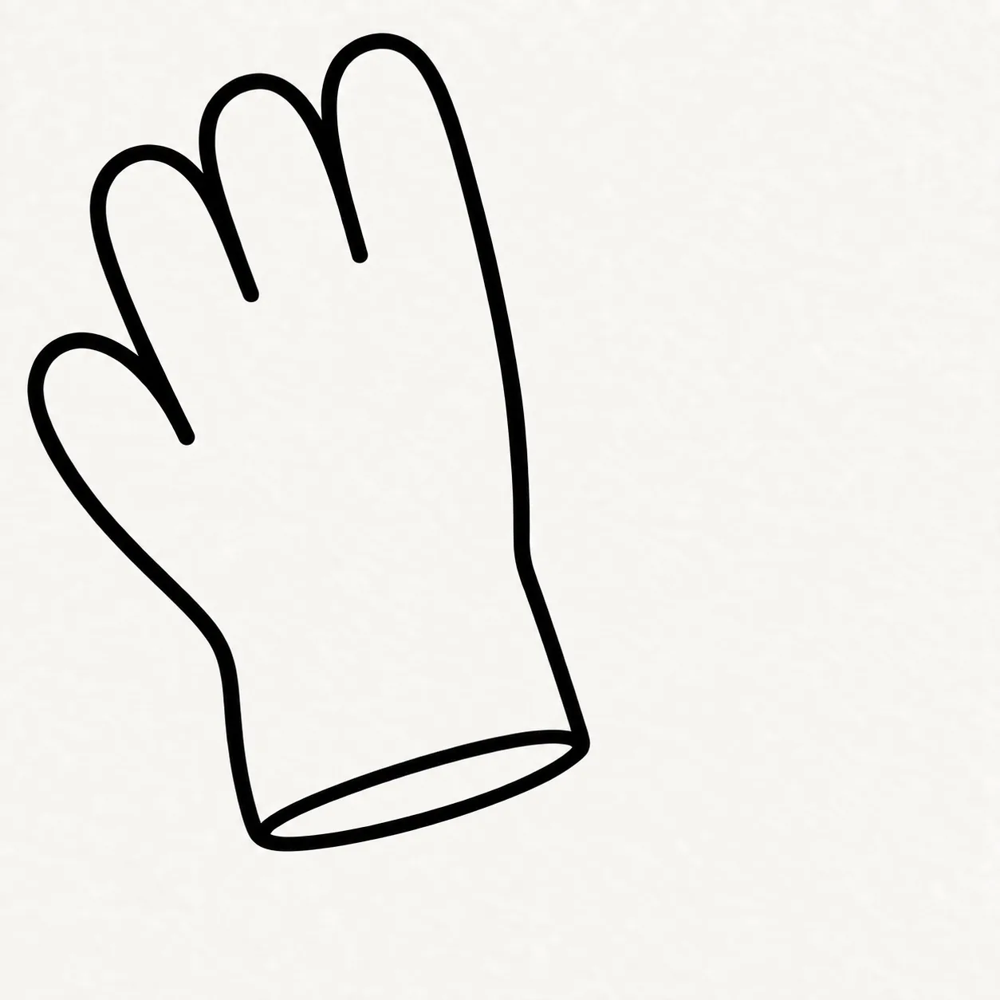
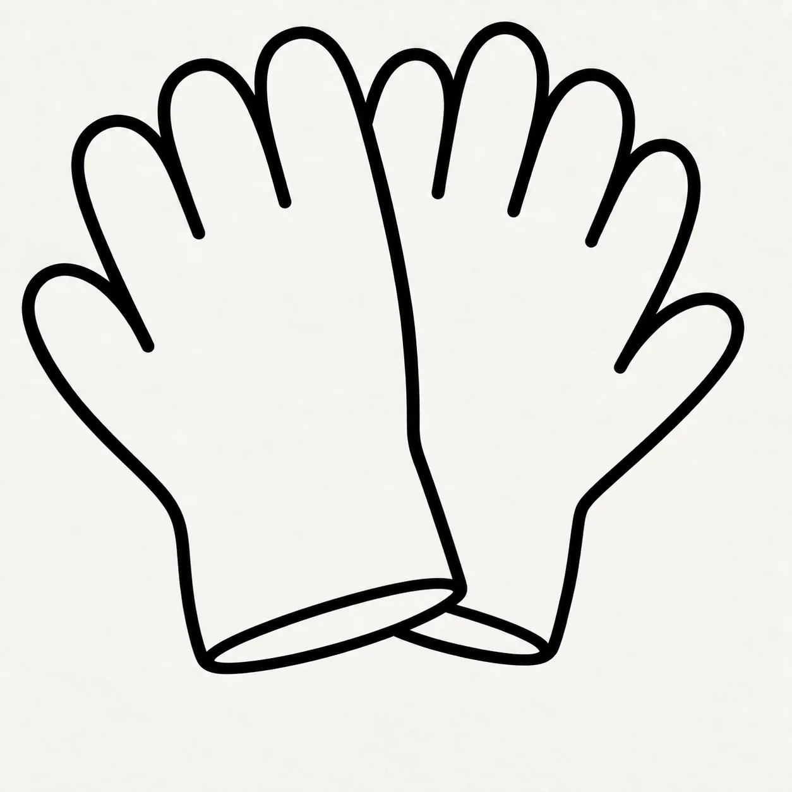
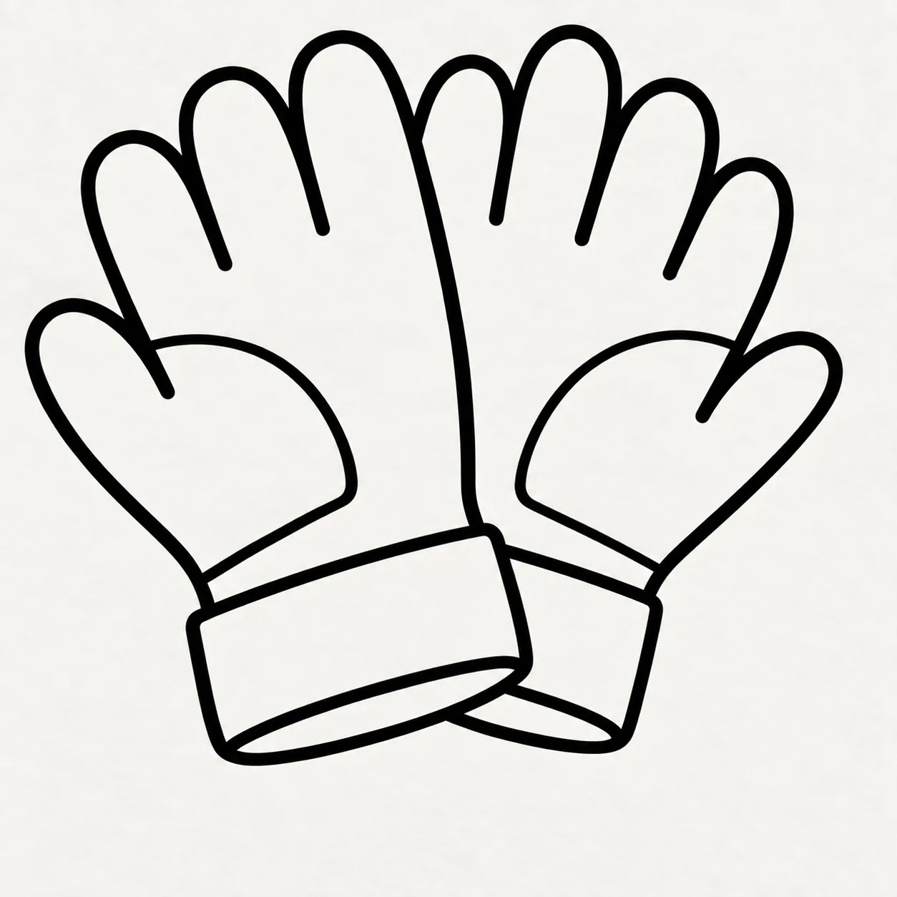
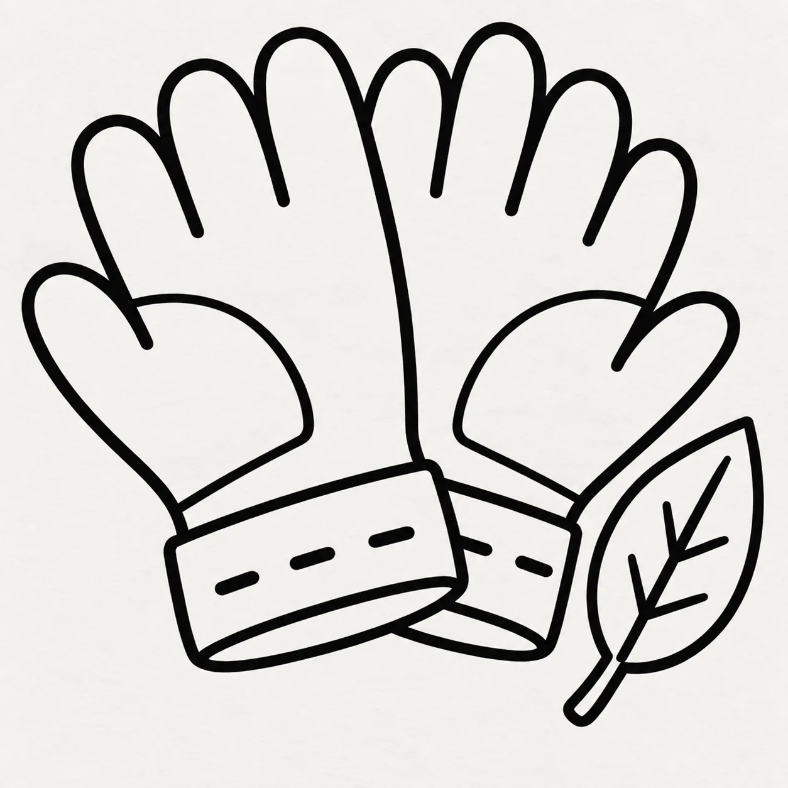
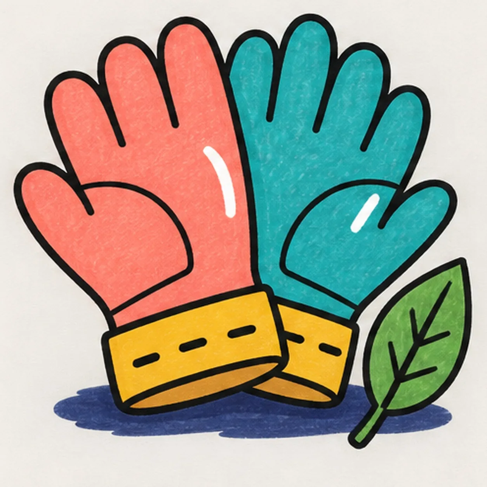

Felt-tip marker mode
Let's draw garden gloves
Treat this as one playful practice round: sketch the idea loosely, simplify the shapes, then commit with confident marker outlines and bright fills.
-
01

Shape the foreground glove
Start at the open cuff edge, sweep around one thumb, then build four rounded finger bumps from shortest to tallest before returning to the cuff. Keep the palm broad and tilt the glove slightly left.
Marker tip: Pull each finger as one relaxed arch. Count four finger bumps plus one thumb before closing the cuff.
-
02

Cross the rear glove behind
Begin the rear cuff to the right, curve around its thumb and four rounded fingers, and stop every hidden line at the foreground glove. Let the two cuffs cross without drawing through the front palm.
Marker tip: Trace the rear outline until it reaches the front glove, lift the marker, then resume only where the edge becomes visible again.
-
03

Band the cuffs and palms
Close each cuff with one broad band, then curve one simple reinforcement panel across each palm. Keep both panel seams inside the glove outlines and stop the rear panel where the foreground glove covers it.
Marker tip: Echo each palm curve rather than drawing two flat patches. The foreground cuff should still cover the rear cuff at the crossing.
-
04

Place the leaf and stitches
Draw one pointed leaf beside the crossed cuffs with one short stem and a simple branching vein pattern. Add exactly three short stitch dashes inside the foreground cuff and two visible dashes inside the partly covered rear cuff.
Marker tip: Count three front stitches and two rear stitches. Keep the separate leaf close enough to join the composition without touching the gloves.
-
05

Set the bright marker color
Reserve one curved paper highlight inside each glove, then add one low broken shadow under the cuffs and leaf. Fill the foreground glove coral, the rear glove teal, both cuff bands golden yellow, and the leaf green with visible marker streaks.
Marker tip: Pull marker strokes from cuff toward fingertips, color around both white highlights, and leave a few dry-paper streaks in every broad fill.
-
06
![Handmade face-free felt-tip marker drawing of exactly two crossed garden gloves with one coral foreground glove leaning left, one teal rear glove leaning right, four rounded fingers and one thumb on each glove, one curved palm reinforcement panel per glove, two golden-yellow cuff bands, exactly three black stitch dashes on the foreground cuff and two visible dashes on the partly covered rear cuff, exactly two open-paper curved highlights, one separate bright-green pointed leaf with a dark branching vein pattern, thick imperfect black outlines, visible marker streaks, and one broken deep-navy ground shadow](../assets/cartoon-garden-gloves-with-leaf-finished-v1.webp)
Reinforce the ready-to-work finish
Reinforce the existing glove outlines, two palm panels, two cuff bands, five visible stitch dashes, leaf veins, and broken shadow. Even the coral, teal, yellow, and green fills while preserving both paper highlights and adding no new shapes.
Marker tip: Count two gloves, two palm panels, two cuffs, five visible stitches, two highlights, and one leaf, then stop before repeated passes flatten the marker texture.
![Handmade face-free felt-tip marker drawing of one pirate spyglass tilted from lower right toward upper left with one coral tapered main barrel, exactly three black diagonal grip stripes, one wide golden-yellow front lens ring, one deep-aqua lens with one large open-paper crescent reflection, exactly two teal telescoping rear tubes, exactly two golden-yellow joint collars, one rounded teal eyepiece, one deep-navy wrist cord attached with one knot and forming one open loop, exactly three golden-yellow four-point sparkle bursts, exactly two open-paper hardware highlights, thick imperfect black outlines, visible marker streaks, and one broken deep-navy shadow made from three loose patches](../assets/cartoon-pirate-spyglass-finished-v1.webp)